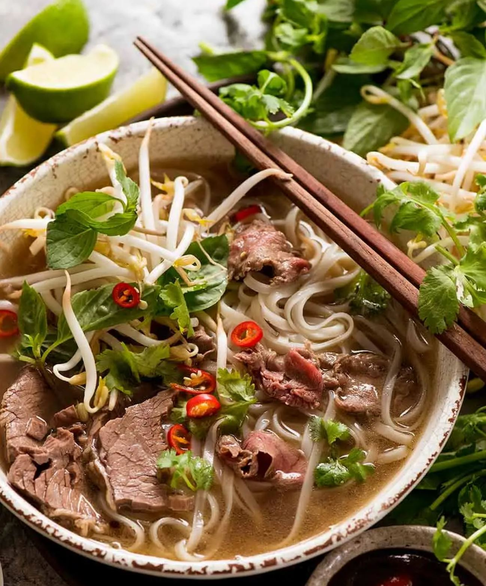

Chinese Beef Dumplings
PREP: 40 minutes COOK: 10 minutes TOTAL: 50 minutes SERVINGS: 36-40
Ingredients
- 1/2 pound (230 grams) ground beef (at least 20% fat)
- 1/4 cup chicken stock (or beef stock, or water)
- 1 tablespoon light soy sauce (or soy sauce)
- 1 tablespoon Shaoxing wine (or dry sherry)
- 2 teaspoons ginger, grated
- 1 teaspoon salt
- 1/4 teaspoon ground toasted Sichuan peppercorn (or black pepper)
- 4 green onions, coarsely chopped
- 1 large carrot, coarsely chopped
- 1/2 cup frozen corn, thawed
- 1/2 cup frozen green peas, thawed
- 1 tablespoon sesame oil
- 20 homemade dumpling wrappers (or packaged dumpling wrappers)
- 1 to 2 tablespoons vegetable oil
Instructions
- To make the dumpling filling, add ground beef into a big bowl. Add chicken stock, light soy sauce, Shaoxing wine, ginger, salt, and toasted Sichuan peppercorns. Mix by using a pair of chopsticks until the liquid is fully absorbed. Cover with plastic wrap, and let marinate in the fridge while you prepare other ingredients.
- (Optional) You can start making dumpling dough now if you’re planning to use homemade dumpling wrappers.
- Add carrot into the food processor. Mix until finely chopped. Add green onions. Mix until the onions are finely cut. Transfer to a bowl.
- When you’re ready to make the dumplings, add minced green onion, carrot, corn, green peas and sesame oil into the ground beef mixture. Stir to mix well.
- Scoop about 1 to 1.5 tablespoons dumpling filling and place it in the center of the wrapper. Hold the dumpling with one hand and start sealing the edges with the other hand. After folding, press the edges again to seal well. You can use any way to fold the dumplings as long as you’re comfortable with it.
- Now you can freeze these dumplings if you don’t cook them immediately. Place them onto a baking tray and seal with a plastic wrapper. You can store the dumplings in the freezer for up to 1 month. Once the dumplings are completely frozen, after about a day, you can transport them to a gallon bag to save freezer space.
- Cook the dumplings in batches. Heat 1 tablespoon oil in a nonstick skillet over medium heat until hot. Add dumplings. Cook until the bottom side turns golden. Add 2 tablespoons water, and cover. Cook until the other side also turns golden and the dumplings are cooked through, 2 to 3 minutes.
- You can serve the dumplings immediately with dumpling dipping sauce (the spicy dumpling sauce works extremely well with these beef dumplings).

Vietnamese Pho
PREP: 20 minutes COOK: 3 hours TOTAL: 3 hours20 minutes SERVINGS: 6
Ingredients
Aromatics
- 2 large onion (halved)
- 5 oz. ginger (sliced down the center)
Spices
- 10 star anise
- 4 cinnamon quills
- 4 cardamon pods
- 3 cloves
- 1-5 tbsp coriander seeds
Beef Bones
- 3 lbs beef brisket
- 2 lbs meaty beef bones
- 2 lbs bone marrow
- 3 3/4 quarts water
Seasoning
- 2 tbsp white sugar
- 1 tbsp salt
- 3 tbsp fish sauce (of choice)
Noodle Soup - Per Bowl
- 1.5 oz dried rick sticks
- 1 oz. beef tenderloin, raw, very thinly sliced
- 3 - 5 brisket slices (used for broth)
Toppings
- Beansprouts (handful)
- Thai basil(3 - 5 sprigs)
- Coriander/cilantro (3 - 5 sprigs)
- Lime wedge
- Finely sliced red chili
- Hoisin sauce
- Siracha
Instructions
Aromatics
- Heat a heavy based skillet over high heat (no oil) until smoking.
- Place onion and ginger in pan cut side down. Cook for a few minutes until it's charred, then turn. Remove and set aside.
- Toast Spices lightly in a dry skillet over medium high heat for 3 minutes.
Remove Impurities
- Rinse bones & brisket then cover with water in large stock pot.
- Boil for 5 minutes, then drain
- Rinse each bone and brisket under tap water.
Broth
- Wipe pot clean, bring 3.5 litres / 3.75 quarts water to boil.
- Add bones and brisket, onion, ginger, Spices
- Add onion, ginger, Spices, sugar and salt - water should just barely cover everything.
- Cover with lid, simmer 3 hours.
- Remove brisket (should be fall-apart tender), cool then refrigerate for later.
- Simmer remaining soup UNCOVERED for 40 minutes.
- Strain broth into another pot, discard bones and spices. Should be about 2.5 litres / 2.65 quarts (10 cups), if loads more, reduce.
- Add fish sauce, adjust salt and sugar if needed. Broth should be beefy, fragrant with spices, savoury and barely sweet
Assemble
- Prepare rice noodles per packet, just prior to serving.
- Place noodles in bowl. Top with raw beef and brisket.
- Ladle over about 400 / 14 oz hot broth - will cook beef to medium rare.
- Serve with Toppings on the side!